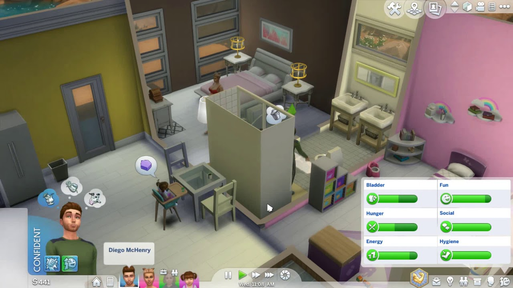
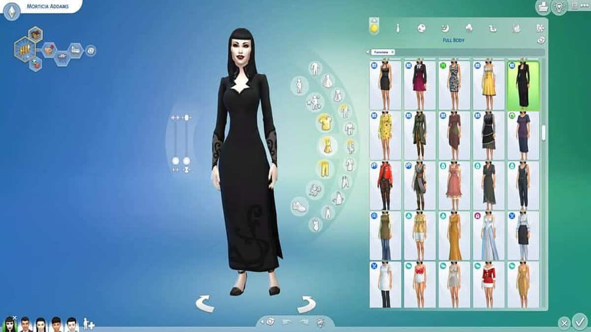
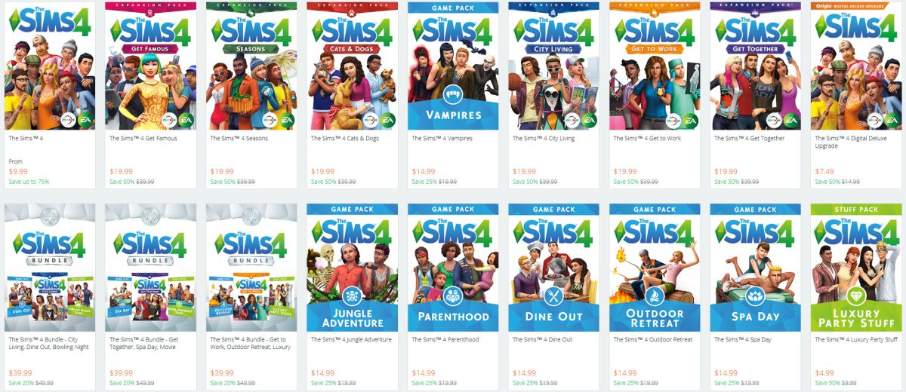

The Sims 4
Players can build and furnish homes using a user-friendly building tool that emphasizes creativity and customization. The game features various neighborhoods, each with distinct characteristics and activities, encouraging players to explore and engage with the community.
Create-a-Sim
Create-A-Sim in The Sims 4 offers an innovative interface for designing Sims with a high level of detail. Players can easily adjust facial features, body shapes, and clothing using a drag-and-drop mechanic, making the customization process more intuitive. The game features a wide range of traits, aspirations, and backgrounds that influence each Sim's personality and behavior. Players can also select different outfits for various occasions, allowing for greater versatility in their Sims' appearances.
DLCs
The Sims 4 has numerous expansion packs, game packs, and stuff packs that add new content, gameplay features, and items. Notable expansion packs include Get to Work (2015), which introduced active careers and alien Sims; City Living (2016), allowing Sims to live in apartments and experience city life; and Seasons (2018), which added seasonal changes, holidays, and weather effects. Other expansions like Get Famous (2018) and Discover University (2019) introduced fame and academic pursuits, respectively.